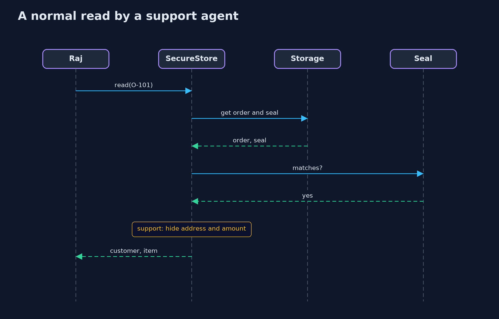
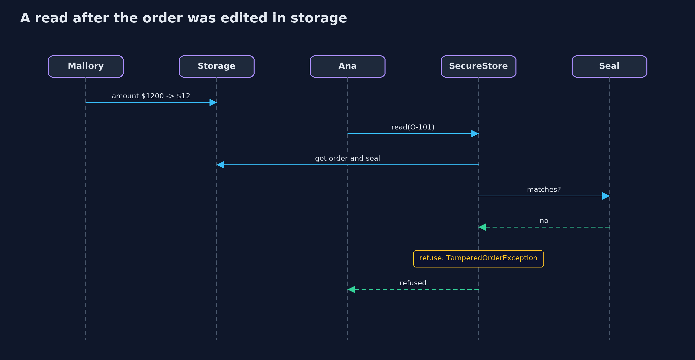

The CIA Triad — UML Sequence Diagrams
1. A normal read by a support agent
The seal is checked first, then the role decides what comes back.

2. A read after the order was edited in storage
The edit left the seal as it was, so the check fails and nothing is returned.
